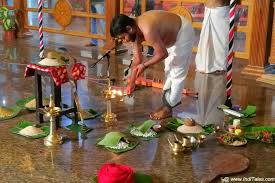

TEMPLE
Guruvayur Sree Krishna Temple (Thrissur): Known as the "Dwarka of the South," it is a major pilgrimage hub, famous for its association with Lord Krishna and its traditional, vibrant atmosphere. Sabarimala Ayyappan Temple (Pathanamthitta): Famous for being situated in the Western Ghats and its strict discipline during the pilgrimage season. Vadakkunnathan Temple (Thrissur): An ancient temple dedicated to Lord Shiva and the primary venue for the famous Thrissur Pooram festival. Mannarasala Nagaraja Temple: A unique forest temple dedicated to the serpent god (Nagaraja), featuring thousands of snake idols
Kerala temple rituals are deeply rooted in Tantric traditions, focusing on maintaining the deity's energy through precise daily poojas (Saanthi Kriyas), including Palliyunarthal (awakening) and Deeparadhana. They emphasize strict purity, traditional chanting, and elaborate festivals like Thrissur Pooram and Attukal Pongala. Key elements include Kalamezhuthu (floor art), fire rituals (Theeyattu), and unique practices like men dressing as women.Theyyam (North Kerala): A profoundly intense ritual where dancers are believed to embody deities, often involving fire-jumping and energetic performances. Mudiyettu & Padayani: Ritual art forms and dramatic dances enacted to depict the victory of Goddess Kali over the demon Daarikan. Temple Festivals (Poorams): Thrissur Pooram is renowned for elephant parades,, panchavadyam (percussion), and the 'Upacharam Cholli Piriyal' (farewell) ritual. Seasonal/Harvest Rituals: Onam features elaborate flower carpets (Onapookkalam), feast (Sadya), and Pulikali (tiger dance). Vishu involves Vishukkani (viewing auspicious items) and Vishu Kaineettam (gifts) |
 |
Temples are sacred, symbolic spaces functioning as the "house of God" (devagriham) in Hinduism and other religions, serving as focal points for worship, cultural preservation, and spiritual refuge. They bridge the human and divine, featuring specific architecture (garbhagriha/sanctum) for, rituals, community gatherings, and economic activity. Wikipedia Wikipedia +3 Key Aspects of Hindu Temples Purpose: Places to worship, receive darshan (viewing the deity), and participate in rituals like kirtan. Architecture: Often designed using sacred geometry (squares/circles), representing a microcosm of the cosmos. They feature complex, symbolic structures built around a central sanctum (garbhagriha). Significance: Temples act as centers for learning, community gatherings (Diwali, Navratri), and support local economies. Daily Life: The deity is often treated as a living being, with daily rituals involving waking, feeding, and resting, similar to a human. Wikipedia Wikipedia +4 Prominent Temples in Bangalore (Karnataka) ISKCON Temple: One of the world's largest, blending modern and traditional design. Shree Banashankari Devi Temple: A 7th-century site known for Vijayanagara architecture. Shrungagiri Shanmukha Temple: Known for its unique structure depicting the six faces of Lord Shanmukha. Chokkanathaswamy Temple: One of the oldest in the area, located in Domlur. Malnad Stays Malnad Stays +1 Significance of Temples Temples are essential for preserving traditions, arts, and passing down cultural practices. They represent a source of peace, hope, and community strength, often supporting social welfare through free kitchens and education.
back to home